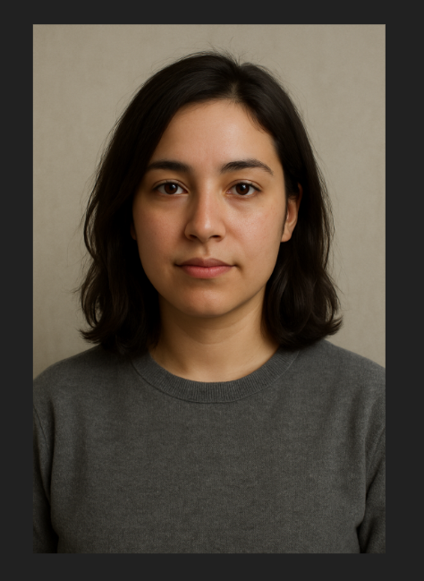

Pritha Dutta

Summary
Motivated and adaptable student with a background in Computer Science and a keen interest in AI/ML. Proven ability to learn quickly, work collaboratively, and communicate effectively. Experienced in project-based learning, public relations, and creative problem-solving. Seeking opportunities to grow and contribute in dynamic, tech-forward environments.
Education
B.Tech in Computer Science and Engineering (Artificial Intelligence & Machine Learning)
SRM Institute of Science and Technology, Chennai, Tamil Nadu
Aug 2023 – Present
- Relevant Coursework: Data Structures, C Programming, OOP in C++
- CGPA: 10
Work Experience
None
Skills
- Programming & Tools: C, C++, GitHub (beginner), HTML, Microsoft Office Suite
- Communication: Public speaking, content writing, presentation skills
- Languages: English (fluent), Bengali (native), Hindi (conversational), German (beginner)
- Creative Tools: Canva, social media content creation
- Soft Skills: Teamwork, adaptability, creativity, time management, critical thinking